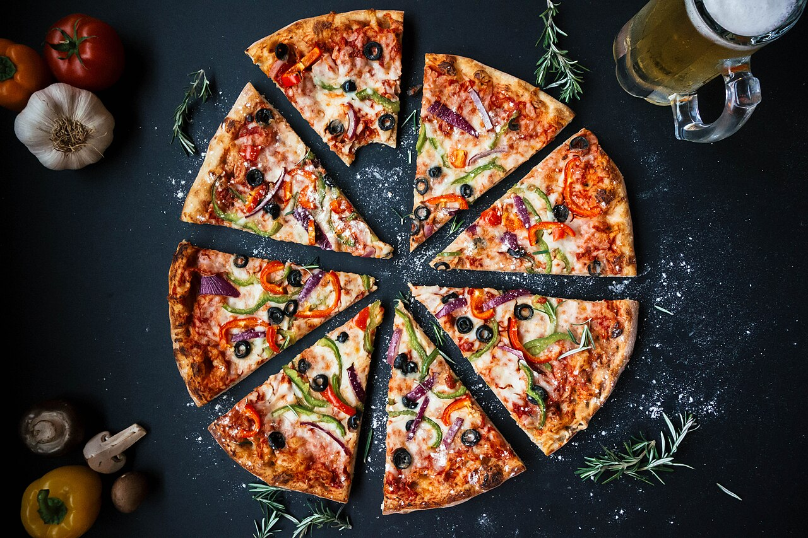

Pizza
Welcome to the Pizza recipe page! Here, you'll find a delightful recipe that will make your taste buds dance with joy.

Introducing our treasured family recipe for authentic Pizza! Crispy, golden crust topped with a rich tomato sauce, melted cheese, and your choice of fresh toppings. Each bite is a comforting delight that warms your heart and soul.
Ingredients for pizza!
- 2 cups all-purpose flour
- 1 teaspoon salt
- 1 teaspoon sugar
- 1 packet (7g) active dry yeast
- 3/4 cup warm water (about 110°F or 43°C)
- 1 tablespoon olive oil
- 1/2 cup pizza sauce
- 1 1/2 cups shredded mozzarella cheese
- Your choice of toppings (pepperoni, bell peppers, onions, mushrooms, olives, etc.)
- Fresh basil leaves for garnish (optional)
Instructions to make pizza!
- In a large bowl, combine the flour, salt, and sugar. In a small bowl, dissolve the yeast in warm water and let it sit for about 5 minutes until frothy.
- Add the yeast mixture and olive oil to the flour mixture. Mix until a dough forms.
- Knead the dough on a floured surface for about 5-7 minutes until smooth and elastic.
- Place the dough in a greased bowl, cover it with a damp cloth, and let it rise in a warm place for about 1 hour, or until it has doubled in size.
- Preheat your oven to 475°F (245°C).
- Once the dough has risen, punch it down and roll it out on a floured surface to your desired thickness.
- Transfer the rolled-out dough to a pizza stone or baking sheet.
- Spread the pizza sauce evenly over the dough, leaving a small border around the edges.
- Sprinkle the shredded mozzarella cheese over the sauce, then add your choice of toppings.
- Bake in the preheated oven for about 12-15 minutes, or until the crust is golden brown and the cheese is bubbly and melted.
- Remove from the oven and let it cool for a few minutes. Garnish with fresh basil leaves if desired.
- Slice and serve your homemade pizza hot, enjoying the delightful flavors and aromas!
Enjoy your homemade pizza, a dish that brings warmth and joy to every meal!
Enjoy your meal!
We hope you enjoy making and savoring this delicious pizza. It's perfect for a cozy family dinner or a fun gathering with friends. Happy cooking and bon appétit!
More Recipes
Check out our Pancakes recipe for another delightful dish that will tantalize your taste buds!
Few more recipes
Explore more recipes on our homepage!